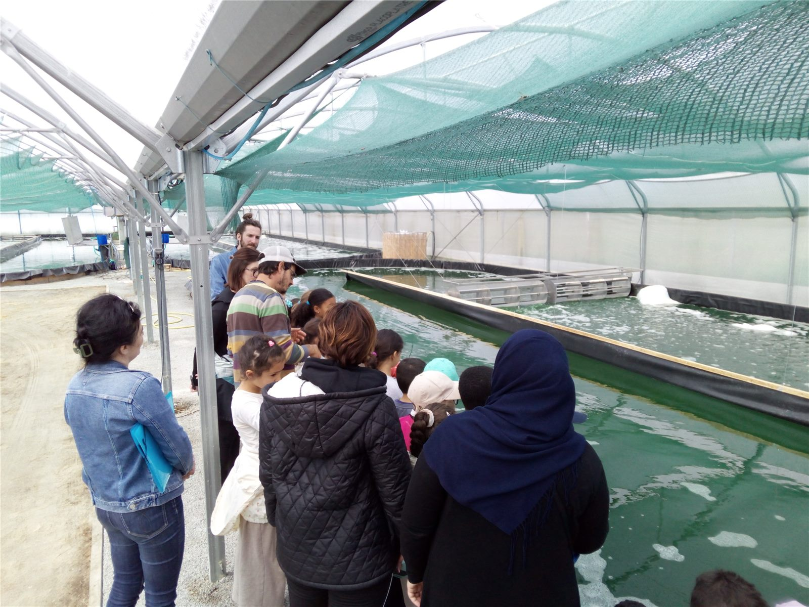
Visitez notre ferme
Venez découvrir nos bassins de spiruline au pied de la Chartreuse : en visite libre, en groupe, en classe ou lors de nos portes ouvertes.
Réserver votre visite →
Venez découvrir nos bassins de spiruline au pied de la Chartreuse : en visite libre, en groupe, en classe ou lors de nos portes ouvertes.
Réserver votre visite →Une visite ludique et concrète pour découvrir le monde de la spiruline, adaptée aux classes de tous niveaux.
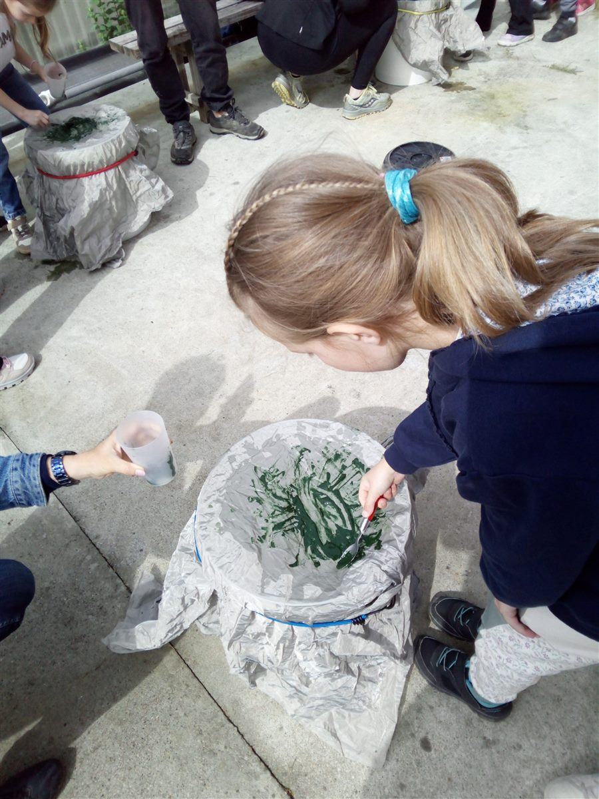
Les élèves récoltent eux-mêmes leur spiruline, comme de vrais spiruliniers, et repartent avec leur propre production.
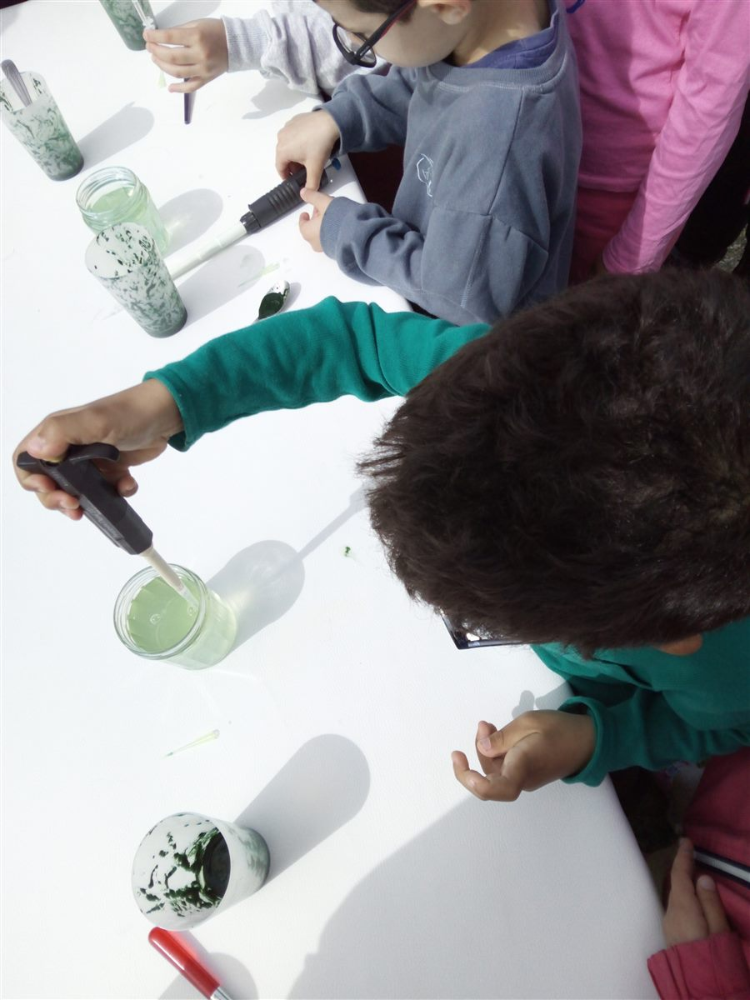
Direction le laboratoire pour observer la spiruline de près et comprendre cette micro-algue en spirale, invisible à l'œil nu.
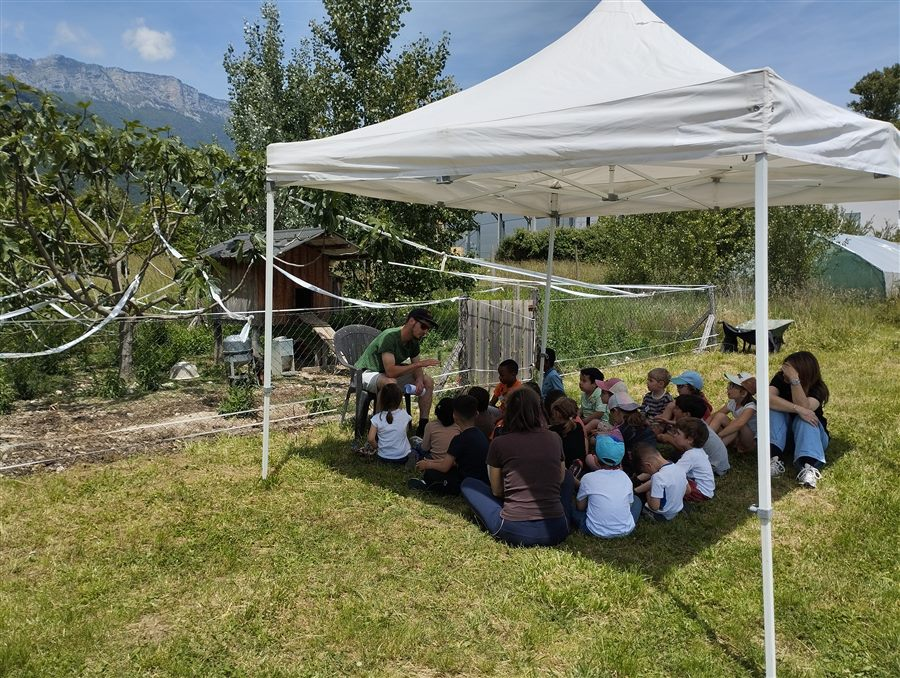
Un temps calme dans les prairies de la ferme, pour raconter aux enfants le monde fascinant des insectes qui nous entourent.
Visite scolaire sur devis, adaptée au niveau et au programme de votre classe.
Réserver une visite scolaire →Tous les ans, début juin, nous ouvrons grand les portes de la ferme pour un beau week-end chaleureux et convivial.
Visite de la ferme très régulière de 10h à 18h, buvette et dégustation sur place — l'occasion idéale de découvrir notre travail en famille ou entre amis.
Des liens locaux et des valeurs partagées avec d'autres acteurs engagés de notre territoire.
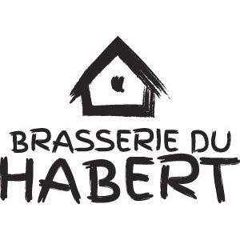
Notre voisine directe au Touvet, et une bière vraiment excellente. Au-delà du voisinage, un vrai partenariat : le CO₂ issu de la fermentation de leur bière est injecté dans nos bassins, où notre spiruline s'en nourrit. Un échange local dont nous sommes fiers.
Découvrir la Brasserie du Habert →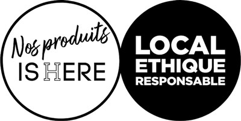
Une marque qui met en lumière les producteurs isérois engagés dans une consommation locale, éthique et responsable. Consommer local, c'est soutenir une économie de proximité, réduire l'impact du transport, et garantir une traçabilité totale sur ce que l'on mange.
Découvrir Nos Produits Isère →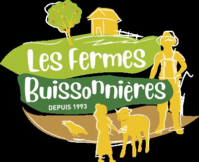
Un réseau de fermes qui ouvrent leurs portes au public depuis 1993 pour transmettre le goût de la nature et de l'agriculture, petits et grands. Nous sommes fiers d'en faire partie et de partager cette mission d'accueil pédagogique à la ferme.
Découvrir Les Fermes Buissonnières →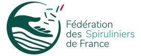
Nous sommes membres du collège de la Fédération des Spiruliniers de France, qui réunit les producteurs autour d'une charte de qualité commune. Une communauté où l'entraide entre producteurs va de pair avec l'exigence, pour faire progresser toute la filière.
Découvrir la Fédération →L'action solidaire de la Fédération des Spiruliniers de France : des dons de spiruline pour lutter contre la malnutrition, en France et à l'international. Nous soutenons cette démarche solidaire portée par toute la filière.
Découvrir Spirsol →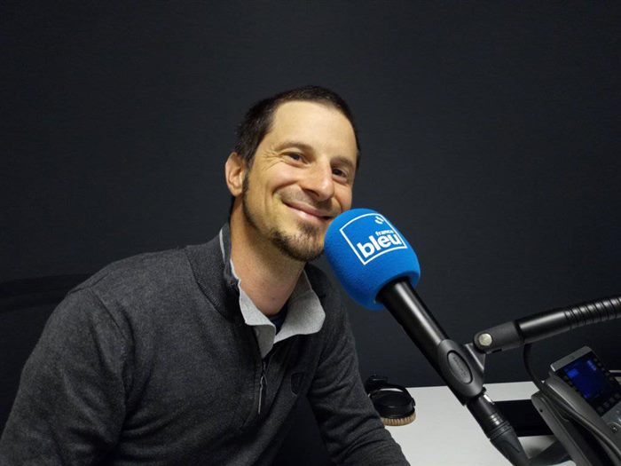
Magazine & presse
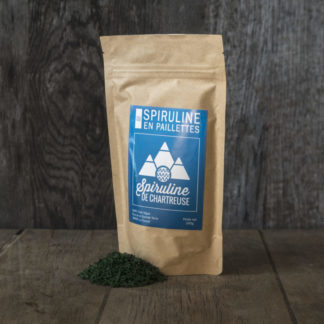
© 2025 GAEC Char'Algue — Spiruline de Chartreuse — SIRET 83044121800013 — TVA FR13830441218 — Hébergeur : Vercel Inc., 340 S Lemon Ave #4133, Walnut, CA 91789, USA
Venez découvrir
notre ferme
Deux façons de visiter : en visite libre pendant nos horaires d'ouverture, ou en visite de groupe sur rendez-vous.
Visite libre
Venez découvrir nos bassins et acheter votre spiruline directement à la ferme, toute l'année, sans rendez-vous, pendant nos horaires d'ouverture.
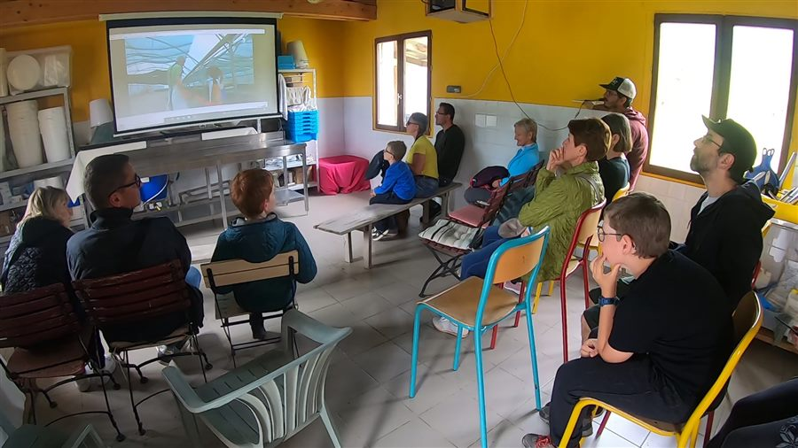
« Super accueil lors des portes ouvertes, visite très intéressante avec dégustation. Les enfants ont adoré aussi. Nous reviendrons ! »
Visite sur rendez-vous
Pour les groupes comme les entreprises, associations, particuliers... Une visite animée en plusieurs étapes : la récolte, les bienfaits et une dégustation. Une durée d'environ 1h, toute l'année.
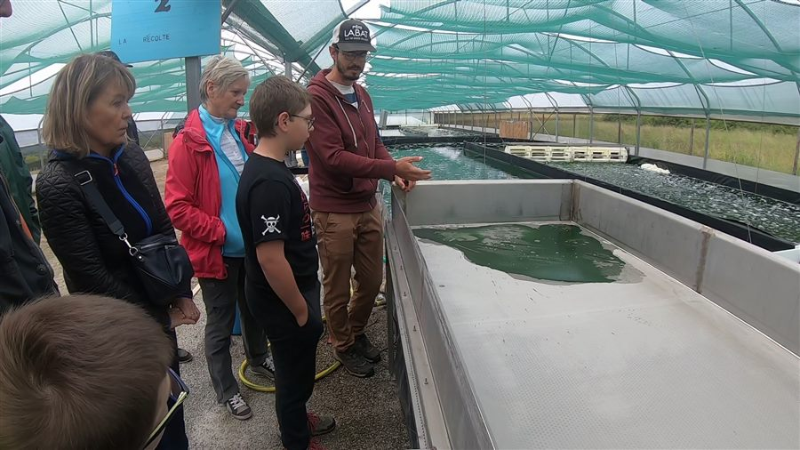
« Deux entrepreneurs jeunes et dynamiques, une sérieuse intention écologique. Une nouvelle génération d'agriculteurs très investis. »